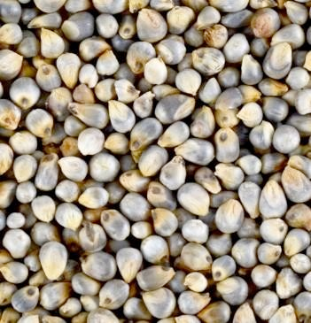
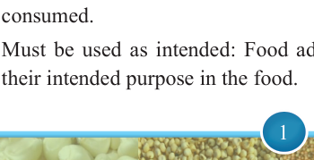
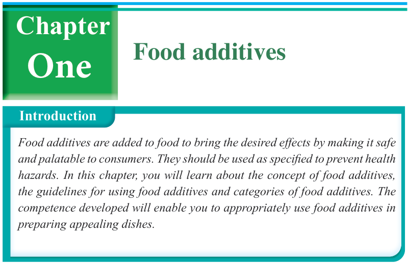

1


Food and Human Nutrition
Form Two

Food additives
Introduction
Food additives are added to food to bring the desired effects by making it safe and palatable to consumers. They should be used as specified to prevent health hazards. In this chapter, you will learn about the concept of food additives, the guidelines for using food additives and categories of food additives. The competence developed will enable you to appropriately use food additives in preparing appealing dishes.
One
Chapter
Think
Food with or without food additives
The concept of food additives
Food additives are substances added to food to enhance its flavour, appearance, texture, and extend its shelf life. They can be natural or synthetic. Food additives do not provide nutrients, but they are added to the food to serve different technological functions including preservation, colouring, and improving the appearance and taste of food. They are normally added when food is prepared and eventually become a component of the food.
Guidelines for using food additives
For an additive to be acceptable for use it must meet the following conditions.
(i)
Must be safe to use: Food additives should not pose any health risks when consumed.
(ii) Must be used as intended: Food additives should be used specifically for
their intended purpose in the food.
17/09/2025 16:30